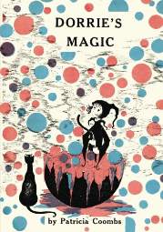
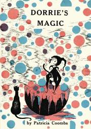

Kiki's Delivery Service
My favorite childrens books growing up were the Dorrie the Witch series by Patricia Coombs, so it was probably inevitable that Kiki's Delivery Service is one of my all-time favorite Studio Ghibli movies.
 

My Neighbor Totoro
I love this movie because the story is both poignant and funny, there are so many great characters, and the animation is beautiful.

Ponyo
This is the first Studio Ghibli film I remember watching with my children. Perhaps that is why it holds a special place in my heart.
I also love how excited Ponyo is about everything in the human world. It reminds me that the ordinary can be extraordinary, if we take the time to notice it.